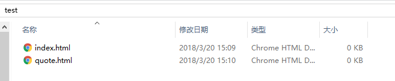
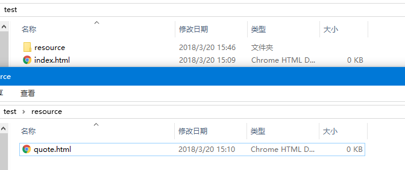

##HTML路径：
在html中，想要引用一个文件，需要使用正确的文件路径。顾名思义，就是该文件所在的位置。通过正确的路径，我们可以获得该文件，使用了错误的文件路径，就会导致引用失效(无法浏览链接文件，或无法显示插入的图片等)。注：这里说的文件，包括图像文件，影视文件，文本文件等。
分类
- Relative Path（相对路径）：同一个目录的文件引用
- Absolute Path（绝对路径）：带域名的文件的完整路径
详解
#####相对路径
- 源文件和引用文件在同一个目录里————直接写引用文件名即可
Web是基于网络的服务，讨论相对路径的时候应该放在网络上（即服务器）讨论，但在本文中，为了说明问题，以本地电脑上的路径进行举例。事实上，在本地上编写Web程序时，在讨论相对路径时，完全可以以本地文件夹做参考，只需在将本地文件夹上传服务器时，不改变文件夹相对位置时即可。
eg：

要在index.html中引用quote.html，则路径为：
1 | <a href="quote.html">click</a> |
- 表示上级目录————../表示源文件所在目录的上一级目录
eg:

要在quote.html中引用index.html，则路径为：
1 | <a href="../index.html">click</a> |
表示源文件所在目录的上上级目录，则用../../，以此类推。
- 表示下级目录————直接写下级目录文件的路径
eg：

要在index.html中引用quote.html，则路径为：
1 | <a href="../quote.html">click</a> |
绝对路径
【注】：这里所说的绝对路径，并非是以电脑本地为根目录的绝对路径。而是虚拟主机提供的目录。
假设你注册了域名www ncuwen.cn(此为博主域名，有兴趣欢迎访问），并申请了虚拟主机，你的虚拟主机提供商会给你一个目录，比如www，这个www目录就是你网站的根目录。
如果你在www目录下放了一张图片，名称为：img.jpg，则访问该图片的路径为：
1 | <img src="http://img.jpg"> |
若在www目录下存在一个文件夹，比如imgs目录，img.jpg在imgs下，则访问该图片的路径为：
1 | <img src="http://imgs/img.jpg"> |
eg：一个从网络上使用资源的实例：

【温馨提示】：在使用网络资源时，一定要找到资源的源地址，若为图片，则路径的最后一定是该图片资源。获取该图片的路径方法时：右键点击该图片，选择复制图片地址。